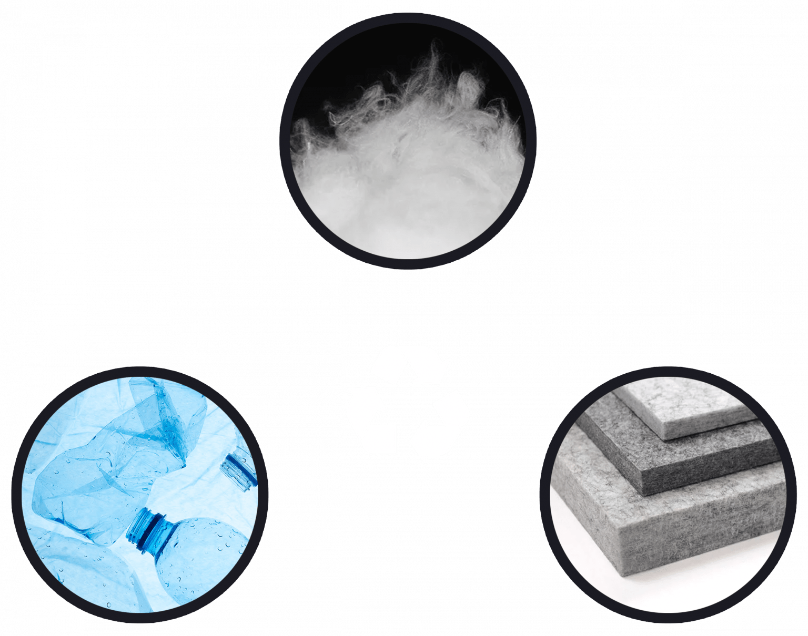

PET felt akustični panel
PET felt akustični panel je materijal za apsorpciju zvuka izrađen od recikliranih vlakana polietilen tereftalata (PET), najčešće dobivenih iz plastičnih boca. Ovi paneli smanjuju buku i poboljšavaju kvalitetu zvuka u različitim prostorima — uredima, snimateljskim studijima, kazalištima i javnim prostorima.

Od plastične boce do akustičnog panela.
Ključne prednosti
-
Apsorpcija zvuka — učinkovito prigušuju zvučne refleksije, smanjujući jeku i stvarajući ugodnije akustično okruženje.
-
Održivost — izrađeni od recikliranih materijala, ekološki su prihvatljivi i doprinose smanjenju otpada.
-
Prilagodljivost — dostupni u različitim oblicima, veličinama, bojama i debljinama, prilagodljivi estetskim i funkcionalnim potrebama.
-
Jednostavna ugradnja — lagani su i jednostavni za ugradnju, pogodni za privremena i trajna rješenja.
-
Trajnost — otporni su na vlagu, plijesan i gljivice, čime je osigurana dugotrajna izvedba.
Sve u svemu, PET felt akustični paneli su učinkovito rješenje za poboljšanje kvalitete zvuka, uz istovremeno promicanje održivosti u dizajnu.
0.9
Koeficijent smanjenja buke (NRC)
75%
Recikliranog materijala
Svojstva materijala
Lagan
Toplinska izolacija
Otporan na plijesan
UV otporan
Može se tiskati
Prozračan
Dostupan u bojama
Apsorpcija zvuka
Otporan na vatru
Recikliran
Jednostavna ugradnja
Nulta emisija